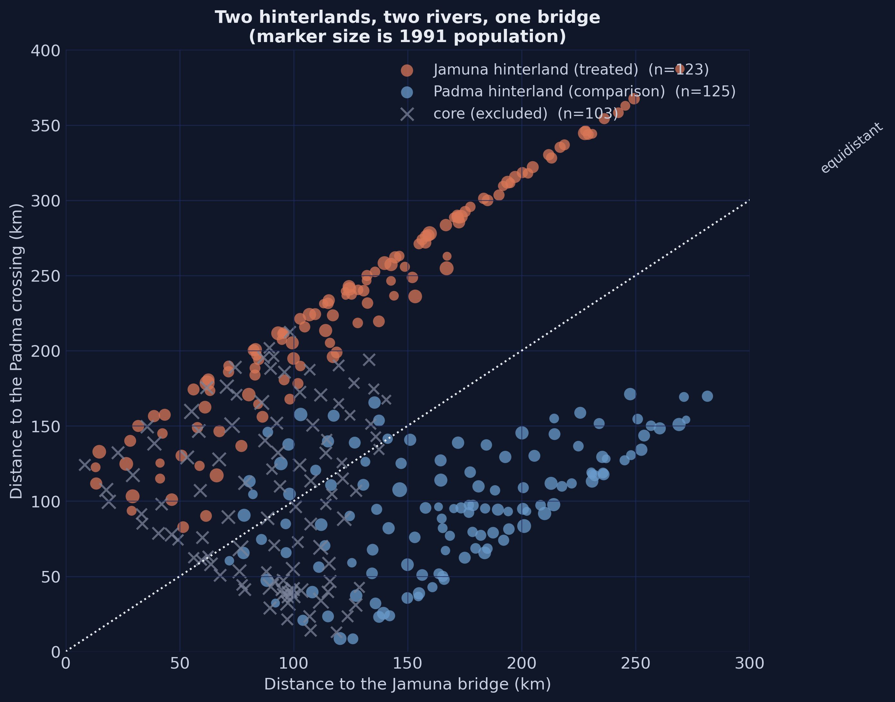
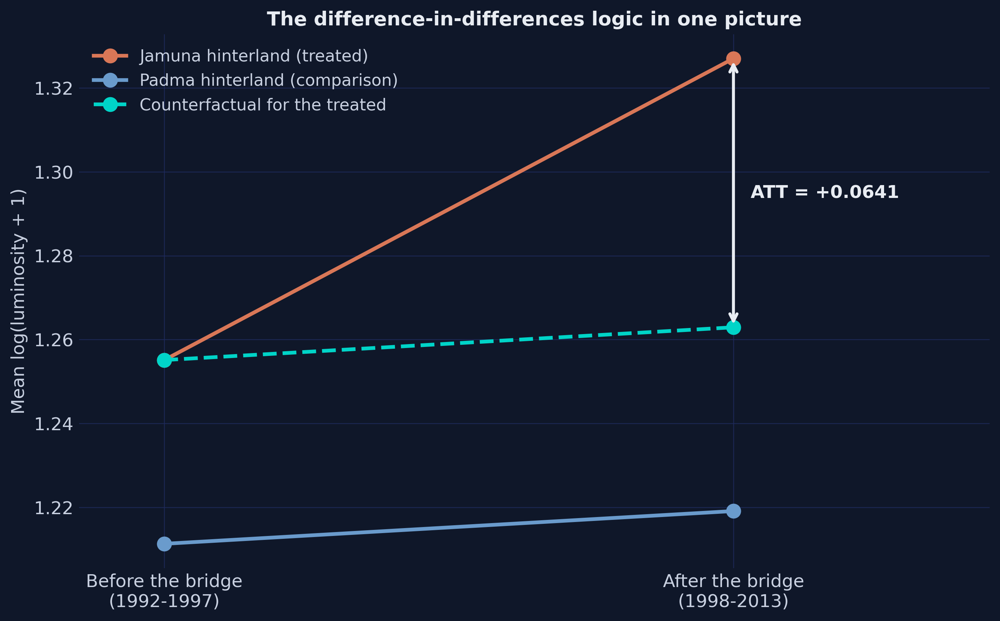
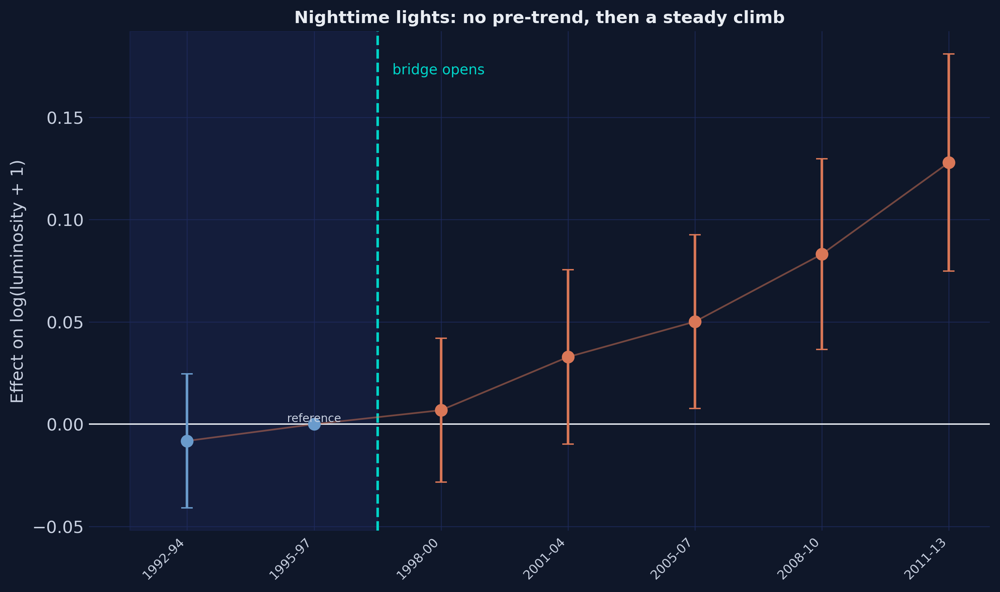
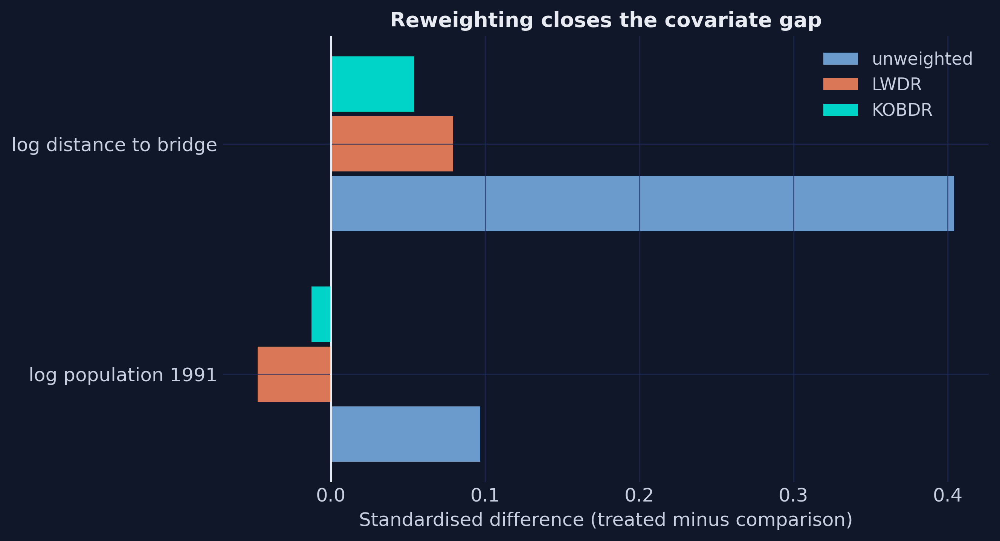
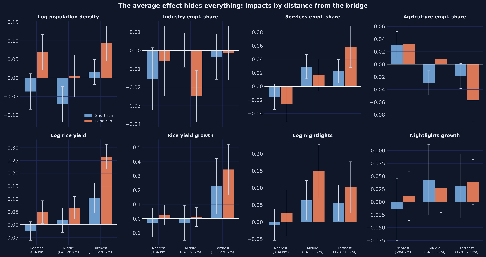
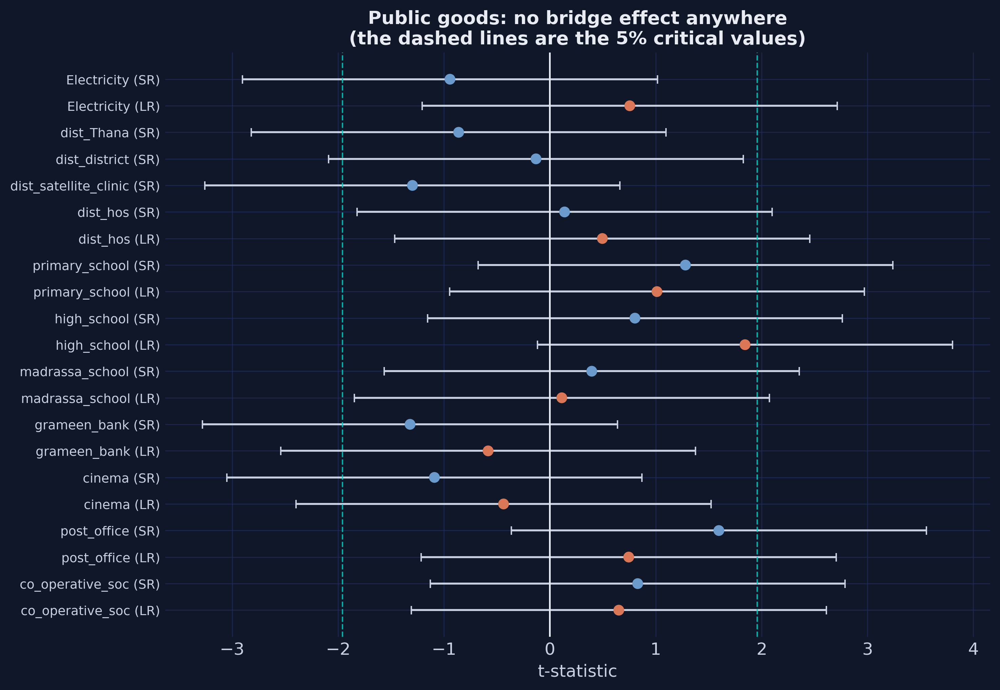
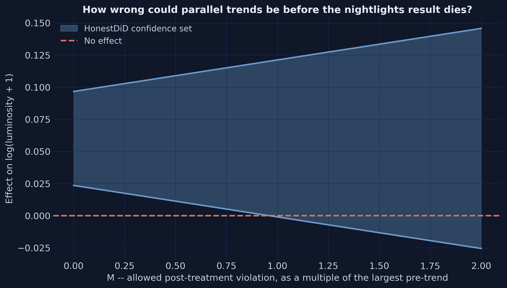
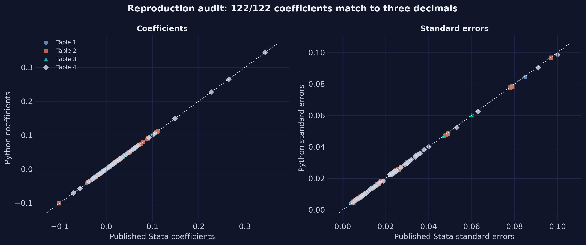
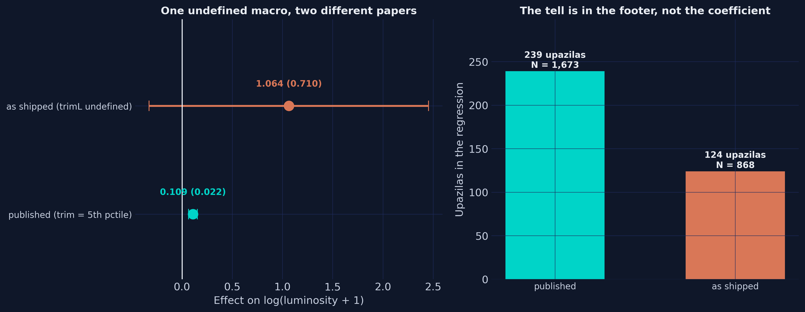

What happens to a poor region when you finally connect it to a rich one
Nagoya University (GSID)
August 5, 2026
Act I
Bangladesh is a delta. Two rivers cut it into three.
The Jamuna — the local name for the Brahmaputra, ninth in the world by discharge — separated the poor northwest from Dhaka.
The Ganges, locally the Padma, cut off the south.
Two isolated hinterlands. One capital. And, until 1998, no bridge over either river.
The Jamuna (Bangabandhu) Bridge — 4.8 km, about US$985 million, opened June 1998.
This is about as close to a discontinuous change in trade costs as the real world offers.
The policy implication flips completely between the first two. And the third looks exactly like the second.
| Theory | Manufacturing | Population |
|---|---|---|
| Big push | up, or flat | up |
| Backwash | down | down |
| Comparative advantage | down | up or flat |
Measure only factories and you cannot tell decline from specialisation. The two stories separate on people.
Act II
Treated: 123 upazilas in the Jamuna hinterland.
Comparison: 125 upazilas in the Padma hinterland.
The Padma hinterland had the same problem — cut off by a great river — and no solution. Its own bridge was not begun until 2015.
The data end in 2013. The comparison region stayed isolated for the entire study window.
Latitude separation between the two hinterlands: under 3 degrees. Florida spans more than five.
Idiosyncratic political geography, not economic prospects.

\[\widehat{\tau} = \left( \bar{Y}_{J,post} - \bar{Y}_{J,pre} \right) - \left( \bar{Y}_{P,post} - \bar{Y}_{P,pre} \right)\]
The first difference removes anything permanent about a place — its soil, its size, its distance from the capital.
The second removes anything that hit the whole country — a fertiliser subsidy, a monsoon, a satellite recalibration.
What survives both subtractions is the bridge.

\[E\left[ Y_{it}(0) - Y_{i,t-1}(0) \mid D_J = 1 \right] = E\left[ Y_{it}(0) - Y_{i,t-1}(0) \mid D_J = 0 \right]\]
Two hikers on parallel ridges, one a hundred metres higher. As long as the terrain runs parallel, you can measure what a helicopter lift did to one of them.
It says nothing about levels. And because it describes a world that never happened, no test can confirm it.

Pre-bridge: −0.008 (se 0.017). On zero.
Then: +0.7% → +3.3% → +5.0% → +8.3% → +12.8%
A confounder producing this would have to be absent before June 1998, appear at exactly the right moment, and then grow steadily for fifteen years without reversing.
Such things exist. The list is short.
A main chute and a reserve. Only if both models fail does the estimate fail. But two chutes do not help if you jumped over the wrong country.

Act III
| Outcome | Effect | |
|---|---|---|
| Nighttime lights | +10.9% | (se 0.022) |
| Rice yield | +6.3% | (se 0.023) |
| Services employment share | +2.3 pp | (se 0.005) |
| Manufacturing employment share | −1.0 pp | (se 0.004) |
| Population density | +2.5% | (n.s.) |
That manufacturing number looks negligible. The 1991 baseline share was 2.8%.
A 1.0 point fall removes roughly a third of the sector.
| Outcome | Short run | Long run |
|---|---|---|
| Nighttime lights | +4.9% | +11.2% |
| Rice yield | +1.2% (n.s.) | +7.9% |
| Population density | −2.5% | +5.9% |
| Manufacturing share | −0.6 pp (n.s.) | −1.2 pp |
| Services share | +2.0 pp | +2.4 pp |
People left first. Then more came than had left.
Manufacturing fell 1.2 percentage points. Backwash predicted that. So did comparative advantage.
Backwash also requires the region to be emptying — capital and labour both leaving for the core.
Population density: +5.9%, se 0.016, significant at the 0.1% level.
The region gained people while losing factories. Backwash is rejected. The Jamuna hinterland did not decline — it specialised.

| Outcome, long run | Nearest | Middle | Farthest |
|---|---|---|---|
| Rice yield | +4.9% | +6.5% | +26.5% |
| Services share | −2.6 pp | +1.7 pp | +5.9 pp |
| Agriculture share | +3.2 pp | +0.8 pp | −5.7 pp |
But the nearest upazilas got the largest proportional cut in travel time — about 40%, against 17% at the far end.
Why do the distant places gain more?
A 40% cut on a ten-dollar taxi ride saves four dollars.
A 17% cut on a five-hundred-dollar flight saves eighty-five.
Upazilas near the bridge foot were already reasonably connected — the ferry was an inconvenience, not a wall.
Upazilas 250 km out were close to autarky, where fertiliser rarely arrived and rice rarely left.
An evaluation reporting only the average tells a minister to build near the demand centre. The heterogeneity says the payoff was at the end of the line.


A result surviving to M = 3 would be much stronger. One breaking at M = 0.3 would be fragile. This sits in between — and that is worth saying out loud.
Act IV

ln(0) must become missing, not -inf. Twenty-four rows have zero rainfall. Stata drops them; NumPy keeps them, and nothing matches.None of these produce an error. All three produce wrong numbers quietly.

global trimL is never defined in that do-filegen cut11 = r(p$trimL) expands to r(p), which does not exist → cut11 is missingreplace ipw4 = . if p < cut11 — in Stata, any number is less than missing → fires for every comparison unitThe tell is not the coefficient. It is the footer: 124 upazilas where there should be 239.
Nothing found in the package changes a single conclusion of the paper.
But notice what made each finding possible: the authors shipped the buggy output and the corrected output. They shipped the intermediate tables. They shipped the data.
A paper that published only its conclusions would be opaque on every count. This one is unusually checkable — which is exactly why a 122-of-122 reproduction was possible at all.
diff-diff — the DiD engine used throughout: 2x2, TWFE, event study, HonestDiD, placebo suitepyfixest — the independent cross-check. All three engines agree to nine decimals.